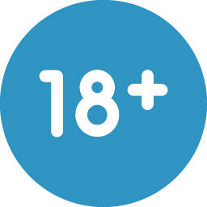
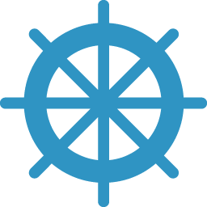

Curs de Patró de Navegació Bàsica PNB
El títol de Patró/ona de Navegació Bàsica és la primera de les quatre titulacions oficials per a poder tripular embarcacions d'esbarjo. Aquesta habilita per a navegar amb embarcacions que tinguin les següents característiques:

Eslora màxima
de 8 metres

Sense límit de potència
de motor

Motos nàutiques de tot tipus
durant el dia

Allunyament màxim de la
costa de 5 milles nàutiques
Navegació diürna
i nocturna

Vàlid fora
d'Espanya
Què necessites?
Per a l'obtenció del títol, és necessari complir amb els següents requisits:

Haver complert els 18 anys,
o 16 amb autorització paterna

Aprovar un examen
teòric
Realitzar 4 hores de curs de
ràdio-comunicacions

Realitzar 8 hores de pràctiques
de navegació i seguretat
Certificat Mèdic
Oficial
Realitzar 16 hores de pràctiques
de vela (Opcional)
Examen teòric
L'examen teòric per a l'obtenció del títol de Patró/ona de Navegació Bàsica (PNB) consta de 27 preguntes tipus test de formulació independent entre si, amb quatre possibles respostes cadascuna, sense opció multiresposta. La durada de l'examen és de 45 minuts. El temari de l'examen és el següent:
NOMENCLATURA NÀUTICA
4 preguntes

AMARRATGE I FONDEIG
2 preguntes

SEGURETAT
4 preguntes

LEGISLACIÓ
2 preguntes
ABALISAMENT
5 preguntes (màx. 2 fallades)
REGLAMENT (RIPA)
10 preguntes (màx. 5 fallades)
Perquè un candidat sigui considerat apte ha de contestar correctament almenys 17 preguntes. En els temes 5 i 6 no poden fallar més de 2 i 5 preguntes respectivament, si no serà considerat no apte.
El candidat haurà de portar a l'examen un bolígraf o retolador de tinta negra, en cap cas plomes o bolígrafs de tinta líquida.
El màxim nombre de fallades permeses en el conjunt de l'examen és de 10.
ÉS IMPRESCINDIBLE I OBLIGATORI PRESENTAR EL DNI, NIE O PASSAPORT EL DIA DE L'EXAMEN!
Pràctiques de Ràdio - comunicacions
Les Pràctiques de Ràdio-comunicacions per a l'obtenció del títol de Patró/ona de Navegació Bàsica (PNB) consten de 4 hores. El programa de pràctiques és el següent:
- Coneixement general de les radiocomunicacions al Servei Mòbil Marítim.
- Coneixement pràctic detallat i aptitud per a utilitzar els equips de radiocomunicacions.
Pràctiques de Navegació i Seguretat
Les Pràctiques de Navegació i Seguretat per a l'obtenció del títol de Patró/ona de Navegació Bàsica (PNB) consten de 8 hores. El programa de pràctiques és el següent:
- Seguretat i comprovacions abans de sortir a la mar. Coneixement i maneig del material de seguretat, revisió dels punts crítics de l'embarcació i comprovacions prèvies a la sortida.
- Motors. Identificació dels elements de la instal·lació propulsora. Encesa del motor i comprovacions de funcionament.
- Cabullería. Maneig de caps i nusos bàsics.
- Maniobres. Maniobres en port, atracades i desatracades. Velocitat de seguretat.
- Ancoratge, vigilància i control de la derrota. Maniobra d'ancoratge i de virada de l'ancora. Precaucions amb banyistes i bussejadors.
- Maniobres de seguretat. Riscos en cas de "home a l'aigua", precaucions i recollida; ús de la funció MOB de l'equip GNSS. Es podrà atorgar una certa flexibilitat en la realització i el desenvolupament de les pràctiques en funció de les condicions meteorològiques. En tot cas, s'haurà d'esgotar el total d'hores i impartir el temari de pràctiques íntegrament.
Certificat Mèdic Oficial
A l'hora de l'expedició de qualsevol títol nàutic, és necessari realitzar una revisió mèdica i presentar el corresponent Certificat Mèdic oficial. Aquesta revisió es pot fer en la majoria de centres mèdics homologats per a les revisions mèdiques de permís de conduir, d'armes o esportius.
Aquelles persones que hagin expedit o renovat una titulació nàutica en un termini menor de dos anys estaran exemptes de presentar el certificat mèdic oficial.
Què inclou el curs PNB?
Els següents punts s'inclouen en el preu del curs PNB:
- 9 hores de classes teòriques en les nostres instal·lacions (8 hores de PNB + 1 hora gratuïtes per a resoldre qualsevol tipus de dubte, repàs de parts més complicades, etc).
- Llibre PNB complet en paper i adaptat a tot el pla d'estudis de la Generalitat.
- Presentació completa en Power Point amb més de 200 imatges detallades i explicatives. Aquesta presentació també serà mostrada durant les classes ja que l'aula compta amb un projector.
- Atenció personalitzada via email, whatsapp i telèfon durant els dies de classe i dies posteriors sent més importants els dies previs a l'examen teòric.
- Exàmens oficials PNB d'altres convocatòries on l'alumne podrà practicar tot el que vulgui i necessiti.
- 1 convocatòria a examen teòric (el seu preu és de 64 euros però la primera convocatòria l'assumim nosaltres).
- Pràctiques de radi de 4 hores en un centre nàutic professional.
- Pràctiques de navegació a motor de 8 hores amb vaixell sortint d'un port a Barcelona o Badalona.
Què NO inclou el curs?
Els següents punts NO s'inclouen en el preu del curs PNB:
- Certificat mèdic. El seu preu és de 50 euros però On Board BCN Academy té aprovat un conveni amb un centre mèdic amb un preu final de 38 euros.
- Expedició de títol. Una vegada finalitzat tot, l'alumne haurà d'expedir la seva titulació davant la Generalitat de Catalunya pagant una taxa.
El preu és de 415 euros
Si portes una persona amb tu tindreu un 10% de descompte cadascun
Classes particulars de PNB
Si estàs a punt de realitzar l'examen teòric oficial per a la titulació de Patró de Navegació Bàsica (PNB) i tens dubtes teòrics, disposem de classes particulars on l'alumne que les necessiti sortirà amb tots els dubtes i preguntes totalment resoltes donant una major confiança per al seu examen teòric oficial.
Habilitació a Vela per a PNB
Si desitges obtenir l'habilitació a vela per a Patró de Navegació Bàsica (PNB), és necessari que realitzis 16 hores de pràctiques específiques de navegació a vela i on no hi haurà cap mena d'examen.
L'habilitació a vela és totalment voluntària i es requereix únicament si desitges navegar amb una embarcació de vela ja que en el moment de realitzar un dels quatre títols oficials només t'habilita a navegar a motor.
Les pràctiques a vela es poden realitzar entre setmana sent 4 sortides de 4 hores al dia o en cap de setmana sent 8 hores al dia i parant per a menjar durant 1 hora.
Inscripció a l'Examen Teòric Presencial PNB
Per només 20 euros, el personal de ON BOARD BCN ACADEMY s'encarregarà personalment d'inscriure't a l'examen teòric presencial per a Patró de Navegació Bàsica (PNB). Una vegada inscrit, t'enviarem la carta de pagament perquè puguis pagar la taxa de l'examen a través del teu banc.
A més, t'informarem sobre:
- Dia, torn i hora de l'examen.
- Lloc, pis i aula.
- Llistat d'admesos.
- I t'enviarem tots els exàmens oficials de les últimes convocatòries dels últims anys a Catalunya perquè puguis estudiar segons el pla d'estudis oficial.